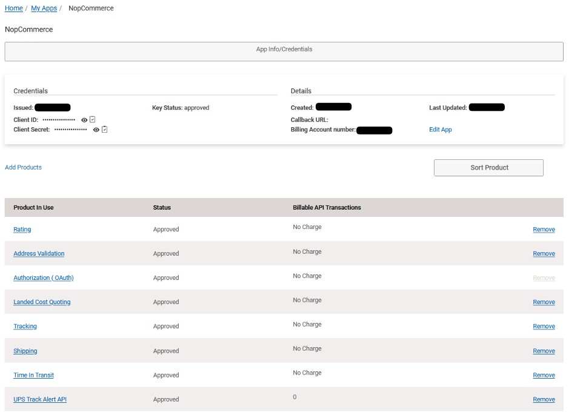
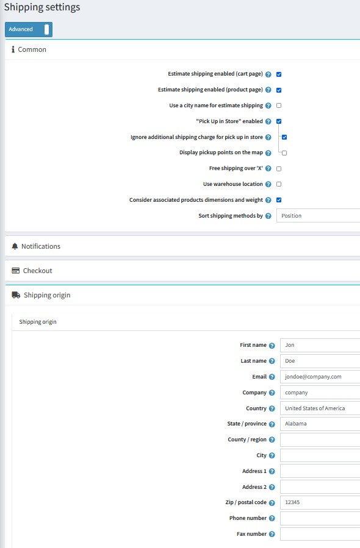
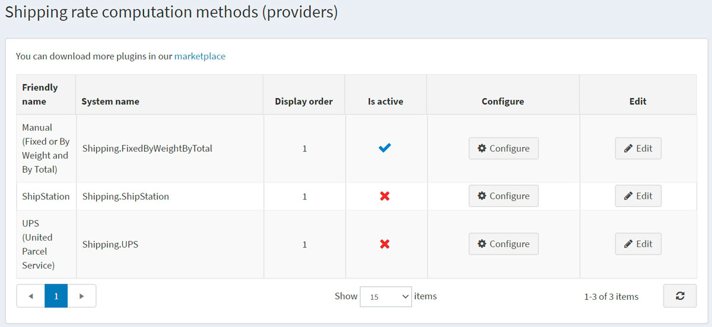
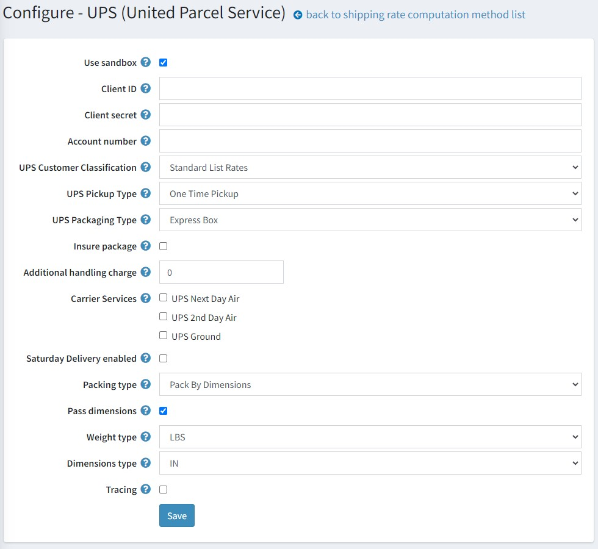

UPS
定義 UPS 即時運費計算
透過 UPS.com 建立 UPS 使用者帳號，然後前往 developer.ups.com，並建立一個應用程式以取得以下資訊：
Client ID
Client Secret
Note
這是為了使用 UPS OAuth，所有 2023 年 6 月之後的新帳號，以及 2024 年 6 月之後的所有帳號均強制要求使用此驗證方式。

加入 UPS 產品以啟用貨件追蹤、費率計算等功能。推薦的產品如下：
- Rating（費率計算）
- Address Validation（地址驗證）
- Landed Cost Quoting（到岸成本報價）
- Tracking（追蹤）
- Shipping（貨運）
- Time In Transit（運送時間）
在 nopCommerce 管理後台，前往 設定 → 設定 → 貨運設定。設定貨運點位置。預設選項是設定單一的 貨運起始地 (Shipping Origin)，此項設定在頁面下方。然而，如果您希望使用在 設定 → 貨運 → 倉庫 中設定的內容，也可以選擇 使用倉庫位置 (Use Warehouse Location)。點擊頁面設定選擇器下方的 Shipping settings 標題，選擇 進階 (Advanced) 即可顯示 使用倉庫位置 核取方塊。

在 nopCommerce 管理後台，前往 設定 → 貨運 → 貨運提供者。

啟用此方式步驟如下：
- 在 UPS (United Postal Service) 資料列中，點擊 編輯 按鈕。
- 在 啟用 (Is active) 欄位中，勾選該選項。
- 點擊 更新。該 false 選項將變更為 true。
點擊清單中 UPS (United Parcel Service) 選項旁邊的 設定。 系統將顯示 設定 – UPS (United Parcel Service) 視窗，如下所示：

Warning
自 2024 年 6 月起，您將無法再使用存取金鑰 (Access Key) 來進行 UPS API 驗證，必須將安全模型更新為 OAuth 2.0。
輸入從 UPS 提供者取得的下列資訊，並選擇與您商店相關的選項：
- 勾選 使用沙盒 (Use sandbox) 核取方塊以使用測試環境。
- 輸入 UPS 提供者的 Client ID。
- 輸入從提供者取得的 Client Secret。
- 輸入從提供者取得的 帳號號碼 (Account Number)。
- 選擇您所需的 UPS 顧客分類 (UPS Customer Classification)：
- Rates Associated With Shipper Number（與託運人號碼相關的費率）
- Daily Rates（每日費率）
- Retail Rates（零售費率）
- Regional Rates（區域費率）
- General List Rates（一般列表費率）
- Standard List Rates（標準列表費率）
- 選擇您所需的 UPS 取貨類型 (UPS Pickup Type)：
- Daily Pickup（每日取貨）
- Customer Counter（顧客櫃台）
- One Time Pickup（單次取貨）
- On Call Air（電話預約空運取貨）
- Letter Center（信件中心）
- Air Service Center（航空服務中心）
- 選擇您所需的 UPS 包裝類型 (UPS Packaging Type)：
- Unknown（未知）
- Letter（信件）
- Customer Supplied Package（客戶自備包裹）
- Tube（圓筒）
- P A K
- Express Box（快遞盒）
- 10 kg Box（10公斤盒）
- 25 kg Box（25公斤盒）
- Pallet（棧板）
- Small Express Box（小型快遞盒）
- Medium Express Box（中型快遞盒）
- Large Express Box（大型快遞盒）
- 勾選 保險包裹 (Insure package) 核取方塊，表示包裹將進行保險。
- 輸入 額外手續費 (Additional handling charge)。這是向顧客收取的額外費用。
- 選擇您要提供給顧客的 承運商服務 (Carrier Services)。
- 選擇是否啟用 週六配送 (Saturday Delivery enabled) 的費率計算。
- 選擇 包裝類型 (Packing type)：
- Pack by dimensions（依尺寸包裝）
- Pack by one item per package（每個包裹單一項目包裝）
- Pack by volume（依體積包裝）
- 勾選 傳遞尺寸 (Pass dimensions) 核取方塊，以便在請求費率時傳遞包裹尺寸。
- 選擇 重量單位 (Weight type) – 英磅或公斤。
- 選擇 尺寸單位 (Dimensions type) – 英吋或公分。
- 勾選 追蹤 (Tracing) 核取方塊以將系統追蹤記錄至系統日誌中。系統將記錄完整的請求與回應 XML（包含 AccessKey/使用者名稱、密碼）。請勿在正式環境中保持此功能開啟。
點擊 儲存。